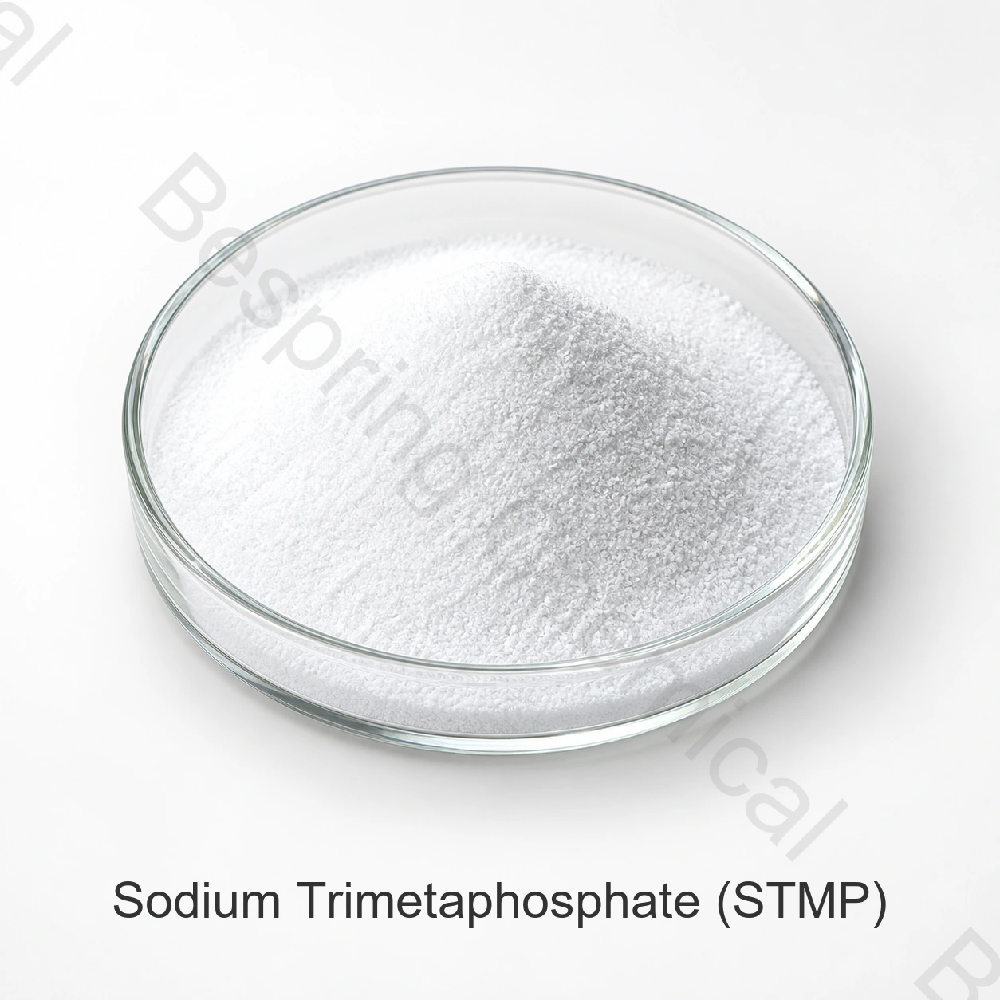

澱粉與質構體系
STMP 用於選定的改性澱粉製程，可評估質構、黏度和製程穩定性。
食品級磷酸鹽 · 環狀磷酸鈉
三偏磷酸鈉是一種環狀磷酸鈉，在選定的食品系統中用於澱粉改性、分散、水管理和產品穩定。

產品圖片 · 訂購時請確認等級與包裝
產品概述
參考 含量測定≥98.5%
標準包裝25 千克袋裝
集裝箱裝載24 MT / 20' FCL
適用性評估可根據要求提供COA和證書
食品級三偏磷酸鈉（STMP）是一種環狀縮合磷酸鹽，所提供資料中列出的分子式為Na3(PO3)3CAS 7785-84-4,參考含量至少為98.5 % 。
此頁面將所提供的商業規格與獨立的身份參考資料分開。必須確認目標市場的合法用途、劑量和文件以及準確的食品應用。
功能作用
效能取決於等級、劑量、配方、製程條件和適用的食品規定。
STMP 用於選定的改性澱粉製程，可評估質構、黏度和製程穩定性。
所提供的應用資訊確定了保水、軟化、粘附、分散和穩定功能。
食品應用篩選
這些是應用篩選領域，而不是普遍使用批准或保證結果。
用作合格的改性澱粉製程中的磷酸鹽試劑;確認殘留限值和適用的食品標準。
評估整個飲料系統中的含水量、霧化控制、礦物相互作用、顏色和維生素穩定性。
在實際蛋白質、鹽和製程條件下篩選水管理、結合、分散和產量。
在檢查與蛋白質、礦物質、親水膠體和冷凍條件的相容性後，可支援穩定目標。
評估預期乳製品配方中的分散度、礦物質平衡、質構和儲存穩定性。
所提供的資訊提到減少變色和維生素C分解; 在保質期試驗中驗證這些結果。
已提供的技術資料
以下數值轉載自所提供的產品表。它們不是批次COA或通用監管標準。確認現行簽署的規格和方法，然後再批准。
可橫向滑動或使用鍵盤查看完整表格
| 檢測專案 | 單位 | 規格 |
|---|---|---|
| 三偏磷酸鈉含量 | % | ≥98.5 |
| P2O5 含量 | % | ≥68.0 |
| 砷(As) | % | ≤0.0003 |
| 重金屬(以Pb計) | % | ≤0.001 |
| 氟化物(F) | % | ≤0.003 |
| 鉛(Pb) | % | ≤0.0004 |
| 1%溶液的pH值 | — | 6.0–8.0 |
| 不溶性物質 | % | ≤0.1 |
規格說明： STMP是一種縮合磷酸鹽，不應與三聚磷酸鈉或六偏磷酸鈉混淆。確認食品標準、允許用途和測試方法。
採購評估支援
請求現行規格/TDS、SDS、測試方法和代表或批次COA。
請求適用的 HACCP、Kosher、Halal 和 ISO 文件;驗證產品、現場、範圍和有效性。
參閱 NIH PubChem 三偏磷酸鈉記錄 用於身份背景。
儲存與操作
採購常見問題
三偏磷酸鈉是一種環狀磷酸鈉，在選定的食品系統中用於澱粉改性、分散、水管理和產品穩定。確認合法用途和準確應用的效能。
所提供的表格顯示≥98.5 % 。使用現行簽署的規格和批次COA進行驗收。
參考數量為每袋25公斤，每20英尺集裝箱24噸，最低訂單量為500公斤。
請求規格/TDS、SDS、COA 和適用的HACCP、Kosher、Halal和ISO文件以獲取確切來源。
提供級別或水合物形態、用途、規格、數量、包裝、目的地、單據和交貨日期。
相關食品磷酸鹽
檢視相關食品級磷酸鹽的識別資訊、規格、應用和採購詳情。
檢視相關食品級磷酸鹽的識別資訊、規格、應用和採購詳情。
檢視相關食品級磷酸鹽的識別資訊、規格、應用和採購詳情。
按規格要求採購
分享應用、規格、數量、包裝、目的地和所需文件。
請提供產品等級和目的地市場，以便確認適用於該訂單的資料。
外部參考資料不等於批次分析證書或百泉產品規格書。